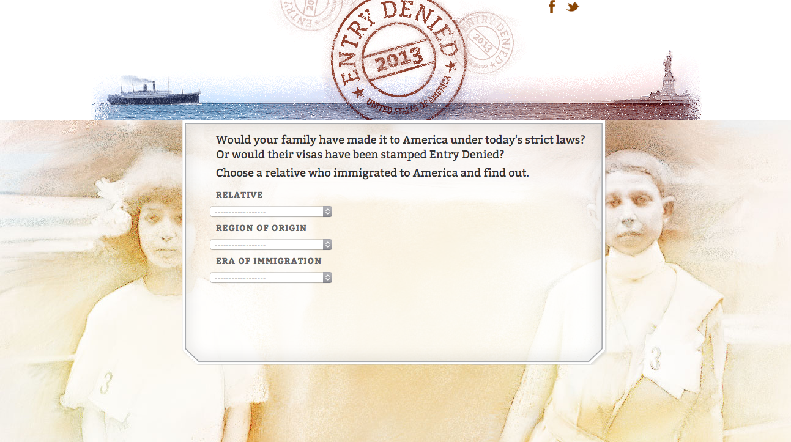

-
- Letter of intent
The website will be used by anyone (probably someone the government
deems an "unauthorized immigrant") seeking more information regarding
how to be here legally, if they qualify for any governmental relief
programs. The website is seeking to serve those who have limited or no
access to information regarding their immigration status so that they
don't get taken advantage of by bad lawyers.
- Theme and Subject
I want to provide a simple, demystifying experience. The design and
user experience will reflect this emphasis on clarity. The second layer
of the website is to provide context. There is a forgotten knowledge of
immigration history that reveals how policy today is an extension of
discriminatory immigration policy was used to construct an "ideal"
(white) America.
- The first experience is one of
practicality. For this reason it must also be mobile optimized.
- Scope
I need to know how to code for smaller viewports and how to capture
user input (Javascript).For citizens, I hope it will build empathy and
change their views on immigration reform. Here are some standard
arguments against my viewpoint that I will keep in mind: "why should I
even care about immigrants? They are just taking our jobs. America is a
melting pot. What are you talking about? America has been the land of
immigrants: Give us your tired, your poor, Your huddled masses yearning
to breathe free, The wretched refuse of your teeming shore. Send these,
the homeless, tempest-tossed to me, I left my lamp beside the golden
door!"
- Design
Here's my rudimentary mock-up.
- Research
I've been compiling my research here:
- Here's an example by the Bend
The Arc Jewish Partnership for Justice
